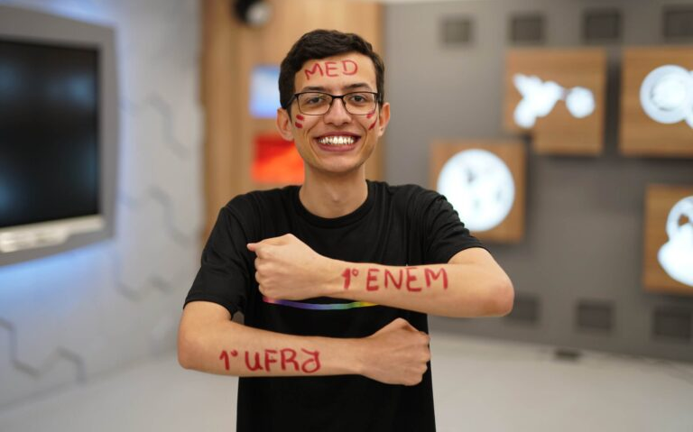

Quem sou eu
Nasci em São Paulo, mas moro no Rio desde os meus 9 anos. Apesar de ser apaixonado pela Medicina desde a infância,
só comecei a acreditar em meu potencial no 2º ano do Ensino Médio, em 2018, quando prestei o Enem pela primeira vez.
À época, fiquei muito feliz com o resultado, porque ainda não tinha noção do desafio que é conquistar uma vaga na universidade.
No ano seguinte (2019), terminando meu Ensino Médio, prestei novamente, atingindo uma média de 750,52 — pontuação que apesar
de boa, ainda era insuficiente para minha aprovação na ampla concorrência.
Até então, meu estudo era praticamente a escola. Eu não tinha ainda desenvolvido a mentalidade de vestibular. Quando vi que
não estava indo bem, corri para onde a maioria corre: um cursinho vestibular tradicional. E foi assim meu ano de 2020: seguindo
um cursinho durante a pandemia.
Não deu certo: apesar de ter evoluído para uma média de 770 pontos, ainda faltava uma boa parte do caminho para a vitória.
Indignado com a situação e determinado a ser aprovado, resolvi investir o meu primeiro mês de estudo em 2021 estruturando um
método que fosse me levar à tão sonhada vaga na Medicina da UFRJ, universidade que era meu alvo.
Daí, criei o método Raio-X da Aprovação, que me levou de 770 a 862 pontos, nota essa que foi recorde nacional,
superando as maiores médias do Brasil desde 2015.
Resultados
Linguagens
42/45 acertos
779,8 pontos
Humanas
43/45 acertos
800,4 pontos
Natureza
42/45 acertos
789,1 pontos
Matemática
43/45 acertos
944,1 pontos
Redação
Nota 1000
Média final: 862,68 pontos
• 1º lugar de Medicina na UFRJ
• Maior nota dentre os +2.179.000 participantes do Enem 2021
Meu Método
Como alcancei esses resultados?
Tendo um método eficaz que os buscasse de maneira ativa e consciente. Usando táticas que aprendi e desenvolvi ao longo de minha experiência com o Enem: três edições anteriores, sem contar as várias provas antigas.
Táticas estas que só quem já passou pelo Enem na pele e foi aprovado pode te ensinar.
Esse meu método de estudo envolve três conceitos fundamentais:
- Organização
- Aprendizado
- Expansão
Os dois primeiros envolvem a definição do quê e do como
você vai aprender. Tratam das etapas mais iniciais do ato de estudar.
Já o último pilar, a Expansão, consiste em uma série de práticas
que visam te treinar para lidar com a cobrança das matérias.
Essa etapa
resolve aquela frustração que você sente quando estuda, estuda e estuda
mas ainda erra muitas questões porque sente que a prova está cobrando
algo completamente diferente daquilo que foi aprendido.
Quer aplicá-lo?
eBooks


Mentoria
Mentoria Raio-X
Mostrar benefícios- Chamadas de vídeo coletivas comigo 2x ao mês
- Chat prioritário para tirar dúvidas
- Por meio dos quais te ensino a:
- Trabalhar com metas diárias
- Priorizar assuntos
- Dominar cada dia de prova
- e muito mais...